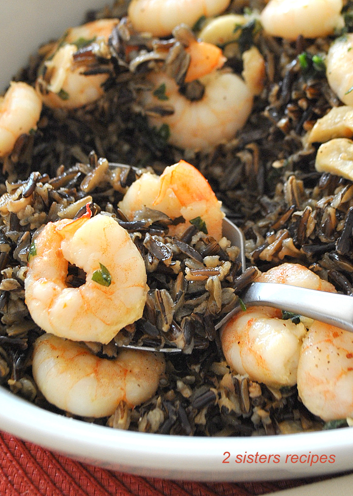

Ideal Dinner

Wild Rice with Lemon Garlicky Shrimp
Ingredients
- cooked baby shrimp
- wild rice
- spices
Steps
- soak rice for an hour
- cook rice
- rinse baby shrimp thoroughly
- warm up shrimp and add desired spices
- mix together
Return to top
Return to main page